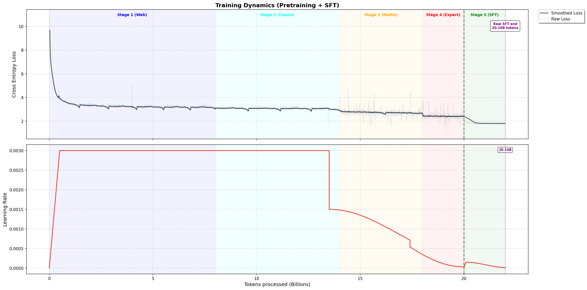

1. Abstract
NanoLLM is a language model trained from scratch with 135 million parameters. This project shows the complete pipeline of building a modern transformer-based language model, from architecture design to supervised fine-tuning (SFT). The model is trained on 20 billion tokens using a curriculum learning strategy across 4 stages, progressively introducing more complex and specialized data. The final base model is fine-tuned on conversational data to create a functional chatbot.
Key highlights include:
- Custom tokenizer with 49,152 vocabulary size trained on diverse datasets
- Grouped Query Attention (GQA)
- RoPE (Rotary Position Embeddings) for better positional encoding
- Mixed precision training (BF16/FP8) with gradient accumulation
- Loss landscape visualization showing curriculum learning dynamics
2. Transformer Architecture: Mathematical Foundations
The Transformer architecture, introduced in "Attention Is All You Need"[1], revolutionized sequence modeling by replacing recurrent connections with self-attention mechanisms. This section provides the essential mathematical framework behind NanoLLM.
2.1 From Text to Tokens: The Embedding Space
Language models operate on discrete tokens rather than raw text. Given a vocabulary $\mathcal{V}$ of size $|V|$, each token $t \in \mathcal{V}$ is mapped to a unique integer ID (encoder) using a tokenizer through this canonic bijection:
$$\begin{aligned} \text{id} \colon \mathcal{V} &\to \llbracket 0, |V| - 1 \rrbracket \\ t &\mapsto \text{id}(t) \end{aligned}$$
We will denote the inverse mapping $\text{tok} = \text{id}^{-1}$ for converting IDs back to tokens (decoder).Each token id : $\text{id}(t) = m \in \llbracket 0, |V| - 1 \rrbracket$ is mapped to a continuous vector representation:
$$\begin{aligned} \text{Embedding} \colon \llbracket 0, |V| - 1 \rrbracket&\to \mathbb{R}^{d_{\text{model}}} \\ m &\mapsto \mathbf{x} \end{aligned}$$
where $d_{\text{model}}$ is the embedding dimension (576 in NanoLLM). For a sequence of tokens $[t_1, t_2, \ldots, t_n]$, we obtain a matrix:
$$\mathbf{X} = \begin{bmatrix} \mathbf{x}_1^T \\ \mathbf{x}_2^T \\ \vdots \\ \mathbf{x}_n^T \end{bmatrix} \in \mathbb{R}^{n \times d_{\text{model}}}$$
The maximum sequence length $n$ is called the context window or block_size
(2048 tokens for NanoLLM).
2.2 Self-Attention: Capturing Token Relationships
Self-attention computes relationships between all tokens in parallel. For each token, we compute three vectors:
$$ \begin{aligned} \mathbf{Q} &= \mathbf{X} \mathbf{W}_Q \quad \text{(Queries)} \\ \mathbf{K} &= \mathbf{X} \mathbf{W}_K \quad \text{(Keys)} \\ \mathbf{V} &= \mathbf{X} \mathbf{W}_V \quad \text{(Values)} \end{aligned} $$
where $\mathbf{W}_Q, \mathbf{W}_K, \mathbf{W}_V \in \mathbb{R}^{d_{\text{model}} \times d_{\text{model}}}$ are learned projection matrices.
Rotary Position Embeddings (RoPE):
Before computing attention scores, NanoLLM applies RoPE to encode positional information directly into the query and key vectors. Unlike absolute position embeddings, RoPE encodes positions through rotations, which naturally capture relative positions in the dot product.
Mathematical Details: Construction and Properties of RoPE (Optional)
For a vector $\mathbf{q} \in \mathbb{R}^{d_{\text{model}}}$ at position $l$, RoPE applies a rotation to each pair of consecutive dimensions. The vector is split into $d_{\text{model}}/2$ pairs, and each pair $(q_{2j}, q_{2j+1})$ is rotated by an angle $\theta_j \cdot l$:
$$ \begin{bmatrix} \tilde{q}_{2j} \\ \tilde{q}_{2j+1} \end{bmatrix} = \begin{bmatrix} \cos(l\theta_j) & -\sin(l\theta_j) \\ \sin(l\theta_j) & \cos(l\theta_j) \end{bmatrix} \begin{bmatrix} q_{2j} \\ q_{2j+1} \end{bmatrix} $$
where the base frequency for dimension pair $j$ is defined as:
$$\theta_j = 10000^{-2j/d_{\text{model}}} \quad \text{for } j = 0, 1, \ldots, d_{\text{model}}/2 - 1$$
This choice of frequencies creates a geometric progression from high-frequency rotations (small dimensions) to low-frequency rotations (large dimensions), similar to sinusoidal position encodings but applied multiplicatively.
The key property of RoPE is that when computing the dot product between a query at position $l$ and a key at position $m$:
$$\tilde{\mathbf{q}}_l^T \tilde{\mathbf{k}}_m = \mathbf{q}^T \mathbf{R}_\theta^T(l) \mathbf{R}_\theta(m) \mathbf{k} = \mathbf{q}^T \mathbf{R}_\theta(m-l) \mathbf{k}$$
the result depends only on the relative distance $(m-l)$, not absolute positions. This property emerges from the rotation matrix identity: $\mathbf{R}_\theta(l)^T \mathbf{R}_\theta(m) = \mathbf{R}_\theta(m-l)$.
In practice, we apply this transformation to every token in the sequence. For a sequence of length $n$, each query vector at position $i \in \{1, 2, \ldots, n\}$ becomes:
$$\tilde{\mathbf{q}}_i = \text{RoPE}(\mathbf{q}_i, i)$$
where $i$ is the token's position index in the sequence. The same applies to all key vectors. For the full matrices $\mathbf{Q}$ and $\mathbf{K}$ (containing all query and key vectors stacked row-wise):
$$ \begin{aligned} \tilde{\mathbf{Q}} &= [\text{RoPE}(\mathbf{q}_1, 1), \text{RoPE}(\mathbf{q}_2, 2), \ldots, \text{RoPE}(\mathbf{q}_n, n)]^T \\ \tilde{\mathbf{K}} &= [\text{RoPE}(\mathbf{k}_1, 1), \text{RoPE}(\mathbf{k}_2, 2), \ldots, \text{RoPE}(\mathbf{k}_n, n)]^T \end{aligned} $$
For simplicity in subsequent notation, we'll write $\mathbf{Q}$ and $\mathbf{K}$ to implicitly mean the position-encoded versions $\tilde{\mathbf{Q}}$ and $\tilde{\mathbf{K}}$.
Attention scores are then computed as:
$$\text{Attention}(\mathbf{Q}, \mathbf{K}, \mathbf{V}) = \text{softmax}\left(\frac{\mathbf{Q}\mathbf{K}^T}{\sqrt{d_{\text{model}}}}\right) \mathbf{V}$$
The $\text{softmax}$ function is applied independently to each row of the score matrix. Let $\mathbf{S} = \frac{\mathbf{Q}\mathbf{K}^T}{\sqrt{d_{\text{model}}}}$ be the $n \times n$ matrix of attention scores (where $n$ is the sequence length). For each query $i$ and key $j$, the output element is defined as:
$$\text{softmax}(\mathbf{S})_{i,j} = \frac{e^{S_{i,j}}}{\sum_{k=1}^{n} e^{S_{i,k}}}$$
The scaling factor $\frac{1}{\sqrt{d_{\text{model}}}}$ prevents dot products from growing too large, ensuring stable gradients. In multi-head attention, this becomes $\frac{1}{\sqrt{d_k}}$ where $d_k = d_{\text{model}}/h$.
Causal Masking:
For autoregressive language modeling, tokens can only attend to previous positions. This is enforced by masking future positions (setting attention weights to $-\infty$ before softmax):
$$\text{CausalAttention}(\mathbf{Q}, \mathbf{K}, \mathbf{V}) = \text{softmax}\left(\frac{\mathbf{Q}\mathbf{K}^T + \mathbf{M}}{\sqrt{d_{\text{model}}}}\right) \mathbf{V}$$
where $\mathbf{M}_{ij} = 0$ if $i \geq j$, else $-\infty$.
2.3 Multi-Head Attention & Grouped Query Attention
Rather than computing attention once, we use multiple attention "heads" in parallel, each learning different aspects of token relationships. Standard Multi-Head Attention (MHA) with $h$ heads splits the embedding dimension:
$$\text{MultiHead}(\mathbf{X}) = \text{Concat}(\text{head}_1, \ldots, \text{head}_h) \mathbf{W}_O$$
where each $\text{head}_i = \text{Attention}(\mathbf{Q}_i, \mathbf{K}_i, \mathbf{V}_i)$ operates on a subspace of dimension $d_k = d_{\text{model}} / h$.
Note on RoPE with Multi-Head: When using multiple attention heads, RoPE is applied independently to each head's query and key projections. Since each head operates on $d_k$ dimensions, the rotation frequencies $\theta_j$ are computed using $d_k$ instead of $d_{\text{model}}$ in the formula above.
Grouped Query Attention (GQA):
NanoLLM uses GQA, which reduces memory by sharing key-value pairs across multiple query heads. With 9 query heads and 3 KV heads:
This reduces the KV-cache size by during inference while maintaining model quality.
2.4 Feedforward Network & Layer Structure
After attention, each token representation is processed independently through a feedforward network (FFN):
$$\text{FFN}(\mathbf{x}) = \text{SwiGLU}(\mathbf{x} \mathbf{W}_1) \mathbf{W}_2$$
where SwiGLU is a gated activation function that splits the hidden dimension and applies element-wise multiplication:
$$\text{SwiGLU}(\mathbf{x}) = \text{SiLU}(\mathbf{x}_{1:d}) \odot \mathbf{x}_{d+1:2d}$$
where SiLU (Sigmoid Linear Unit) is applied element-wise and is defined as:
$$\text{SiLU}(\mathbf{z}) = \mathbf{z} \odot \sigma(\mathbf{z}) = \frac{\mathbf{z}}{1 + e^{-\mathbf{z}}}$$
The complete transformer block applies attention and FFN with residual connections and normalization:
$$ \begin{cases} \tilde{\mathbf{X}}^{(k+1)} &= \mathbf{X}^{(k)} + \text{Attention}(\text{LayerNorm}(\mathbf{X}^{(k)})) \\ \mathbf{X}^{(k+1)} &= \tilde{\mathbf{X}}^{(k+1)} + \text{FFN}(\text{LayerNorm}(\tilde{\mathbf{X}}^{(k+1)})) \end{cases} $$
2.5 From Hidden States to Probabilities
After $L$ transformer layers (30 in NanoLLM), the final hidden state is projected back to vocabulary space through weights tied with the input embedding (which is a common practice to reduce parameters without sacrificing performance):
$$\mathbf{Z} = \text{LayerNorm}(\mathbf{X}^{(L)}) \quad \Rightarrow \quad \text{logits} = \mathbf{Z} \mathbf{W}_{\text{vocab}}^T \in \mathbb{R}^{n \times |V|}$$
Softmax converts logits to a probability distribution over the vocabulary:
$$(\mathbb{P}(t_{i+1} \mid t_1, \ldots, t_i))_{1 \leq i \leq n} = \text{softmax}(\text{logits})$$
2.6 Training Objective: Cross-Entropy Loss
The model is trained to predict the next token in a sequence. Given ground truth token $t^*$, the loss for a single position is:
$$\mathcal{L}_{i}(\theta) = -\log \mathbb{P}(t_{i+1} = t^* \mid t_1, \ldots, t_i) = -\log (\text{softmax}(\text{logits})_{i,\text{id}(t^*)})$$
For a full sequence of length $n$, we average losses across all positions:
$$\mathcal{L}_{\text{seq}}(\theta) = \frac{1}{n} \sum_{i=1}^{n} \mathcal{L}_{i}(\theta)$$
This process is repeated in parallel across all sequences in the training batch, and the total loss is averaged over the batch. The model parameters $\theta$ are then updated to minimize this loss using gradient-based optimization.
2.7 Optimization: AdamW
Model parameters $\theta$ are updated using AdamW[7], a variant of Adam that decouples weight decay from gradient updates. The update rule combines:
- Momentum: Exponential moving average of gradients ($\beta_1 = 0.9$)
- Adaptive learning rates: Per-parameter scaling based on gradient variance ($\beta_2 = 0.999$)
- Weight decay: L2 regularization applied directly to weights ($\lambda = 0.1$)
At each training step $t$:
$$ \begin{aligned} \mathbf{m}_t &= \beta_1 \mathbf{m}_{t-1} + (1 - \beta_1) \nabla_{\theta} \mathcal{L}_t \quad \text{(momentum)} \\ \mathbf{v}_t &= \beta_2 \mathbf{v}_{t-1} + (1 - \beta_2) (\nabla_{\theta} \mathcal{L}_t)^2 \quad \text{(variance)} \\ \theta_t &= \theta_{t-1} - \eta \left( \frac{\hat{\mathbf{m}}_t}{\sqrt{\hat{\mathbf{v}}_t} + \epsilon} + \lambda \theta_{t-1} \right) \end{aligned} $$
where $\hat{\mathbf{m}}_t$ and $\hat{\mathbf{v}}_t$ are bias-corrected estimates, and $\eta$ is the learning rate (max 3e-3 for NanoLLM).
2.8 Why This Architecture Works
- Parallelization: Unlike RNNs, all tokens are processed simultaneously during training, enabling efficient GPU utilization.
- Long-range dependencies: Self-attention can directly connect distant tokens, avoiding the vanishing gradient problem of sequential models.
- Scalability: The architecture scales predictably with model size (parameters) and data (tokens), following empirical laws like Chinchilla scaling[8].
Further Reading: For the complete derivation and ablation studies, refer to the original Transformer paper[1].
3. Model Architecture Design
3.1 Architecture Overview
NanoLLM is based on a decoder-only transformer architecture with several modern enhancements. The model follows a Llama-style architecture, inspired by SmolLM-135M[2].
vocab_size: 49,152 tokensblock_size: 2,048 context lengthd_model: 576 hidden dimensionsn_head: 9 attention headsn_kv_head: 3 key-value heads (Grouped Query Attention)n_layer: 30 transformer blocks- Total Parameters: 135,561,216 (~135M)
3.2 Key Architectural Choices
Grouped Query Attention (GQA):
Instead of Multi-Head Attention (MHA), NanoLLM uses GQA where 9 query heads share 3 key-value heads. This reduces KV-Cache memory usage by 3× while maintaining model quality, as demonstrated in "GQA: Training Generalized Multi-Query Transformer Models from Multi-Head Checkpoints"[3].
RoPE (Rotary Position Embeddings):
Position information is encoded using RoPE[4], which applies rotations to query and key vectors. This approach provides better extrapolation to longer sequences compared to absolute positional embeddings and integrates naturally with the attention mechanism.
SwiGLU Activation:
The feedforward network uses SwiGLU activation[5] instead of standard ReLU,
improving model
capacity with the same parameter count. The FFN hidden dimension is set to 8/3 × d_model.
LayerNorm:
Layer normalization is implemented using standard LayerNorm, which normalizes activations by computing both mean and variance. This ensures stable training by preventing activation values from becoming too large or small.
Note: Standard LayerNorm requires computing both the mean and variance for each layer. An alternative approach is RMSNorm[6], which simplifies this by removing the mean centering operation and only using the root mean square. RMSNorm is computationally cheaper (~10-15% faster) and has been shown to achieve comparable performance in modern language models. Migrating to RMSNorm could be a worthwhile optimization for future iterations.
4. Data Mixture & Curriculum Learning
4.1 Dataset Sources
The training corpus combines five diverse datasets from HuggingFace, totaling 20.1 billion tokens (pre-training + SFT):
- FineWeb-Edu: High-quality educational web content (general knowledge)
- Python-Edu: Curated Python code with educational value
- FineMath: Mathematical reasoning and problem-solving
- Cosmopedia-v2: Synthetic textbooks and educational materials
- SmolTalk: Conversational dialogues for chat abilities
4.2 Curriculum Learning Strategy
Pre-training is divided into 4 progressive stages, each focusing on different capabilities. This curriculum approach allows the model to build foundational knowledge before tackling more complex and specialized content.
| Stage | Tokens | Web | Python | Cosmo | Math | Focus |
|---|---|---|---|---|---|---|
| Stage 1 | 8B | 85% | 15% | 0% | 0% | General language & basic coding |
| Stage 2 | 6B | 70% | 20% | 10% | 0% | + Knowledge injection |
| Stage 3 | 4B | 55% | 20% | 10% | 15% | + Mathematical reasoning |
| Stage 4 | 2B | 35% | 20% | 25% | 20% | Expert specialization |
The rationale is to start with general web text to learn basic language patterns, progressively introduce specialized domains (science, code, math), and end with a balanced mixture emphasizing expert knowledge.
4.3 Tokenizer Training
A custom Byte-Pair Encoding (BPE) tokenizer with 49,152 tokens was trained on a balanced
sample from all datasets. Special tokens include <|endoftext|>,
<|im_start|>, <|im_end|> for chat formatting,
and <|padding|> for sequence alignment.
5. Base Model Training
5.1 Training Configuration
- Total Tokens: 20 billion
- Batch Size: 256 samples (effective) = 64 micro-batches × 4 samples
- Gradient Accumulation: To overcome GPU memory constraints, we process 4 samples per forward pass (micro-batch), accumulate gradients over 64 steps, then perform a single optimizer update. This allows training with large effective batch sizes (256 sequences ≈ 524K tokens) without requiring more memory.
- Learning Rate: Peak 3e-3 with warmup (5%) and cosine decay[7]
- Optimizer: AdamW (weight decay 0.1, fused implementation)
- Precision: BF16 with optional FP8 using Transformer Engine (requires NVIDIA Ada, Hopper, or Blackwell GPU architectures)
- Hardware: NVIDIA RTX 5080 with
torch.compileandF.scaled_dot_product_attentionenabled - Training Time: ~70 hours
5.2 Learning Rate Schedule
The learning rate follows a three-phase schedule:
- Warmup (0-5%): Linear increase from 0 to 3e-3 over 1B tokens
- Stable (5-67.5%): Constant learning rate at 3e-3
- Annealing (67.5-100%): Cosine decay to 1% of peak (3e-5)
This aggressive schedule with late annealing is designed for small models following Chinchilla scaling laws, where compute budget is limited.
5.3 Chinchilla Checkpointing
Following Chinchilla-optimal principles[8], intermediate checkpoints are
saved every
20 × num_parameters tokens (~2.7B tokens). This allows analyzing
the model's evolution and provides fallback options if training becomes unstable.
6. Supervised Fine-Tuning (SFT)
6.1 SFT Dataset
After pretraining, the base model is fine-tuned on 100M tokens of conversational data with the following mixture:
- SmolTalk (75%): Multi-turn dialogues
- Web + Cosmo (25%): Instructional content
6.2 Chat Format
Messages are formatted using ChatML-style markers:
<|im_start|>user
{user message}<|im_end|>
<|im_start|>assistant
{assistant response}<|im_end|>
6.3 SFT Training Details
The SFT phase uses more conservative hyperparameters to avoid catastrophic forgetting:
- Learning Rate: Peak 1.5e-4 (50× lower than pretraining)
- Weight Decay: 0.01 (10× lower)
- Schedule: 5% warmup + cosine decay
- Loss Masking: Only assistant responses contribute to loss (user input masked with -100)
7. Training Metrics & Analysis

Figure 1: Training dynamics across pretraining (4 curriculum stages) and supervised fine-tuning. The top panel shows cross-entropy loss progression, while the bottom panel displays the learning rate schedule.
7.1 Loss Progression
The training loss curve reveals several important patterns:
- Stage 1 (0-8B tokens): Rapid loss decrease as the model learns basic language patterns. The loss drops from ~10 to ~3.5, indicating the model is learning word predictions and simple syntax.
- Stage 2 (8-14B tokens): Introduction of knowledge-heavy content (Cosmopedia) causes a slight loss increase, followed by continued decrease. This "shock" is expected when adding new domains.
- Stage 3 (14-18B tokens): Math reasoning content initially increases difficulty, shown by the loss plateau. The model adapts and continues improving as it learns mathematical patterns.
- Stage 4 (18-20B tokens): Final specialization with highest concentration of expert content. Loss continues decreasing, showing the model successfully integrates all knowledge.
- SFT Phase (20.0-20.1B tokens : stretched for visibility): Sharp initial loss decrease as the model learns conversational structure, followed by stable convergence around loss ~2.3. The SFT phase effectively teaches the model to follow instructions without forgetting its pretraining knowledge.
7.2 Learning Rate Strategy
The learning rate schedule is visualized in the bottom panel:
- Warmup (1B tokens): Gradual LR increase prevents early training instability
- Stable training (1B-13.5B): Constant LR maximizes learning during curriculum stages
- Annealing (13.5B-20B): Cosine decay allows fine-grained optimization as loss plateaus
- SFT warmup & decay: Conservative LR (1.5e-4 peak) prevents overfitting on chat data
Note: Two discontinuities are visible in the learning rate schedule. The first results from an LR reduction following training divergence: maintaining 3e-3 when introducing mathematical content (Stage 3) caused instability, as the aggressive learning rate erased previously learned web and Cosmopedia knowledge. The second discontinuity stems from adjusting the cosine decay target from 3e-4 to 3e-5 before SFT. Small models like NanoLLM benefit from higher learning rates for broad exploration but require significant reduction during specialization phases to prevent catastrophic forgetting.
7.3 Training Efficiency
Throughput Metrics:
- ~79,000 tokens/second on single RTX 5080 16GB
- Effective batch size: 524,288 tokens
- Gradient accumulation: 64 steps
- Memory usage: ~11GB (BF16)
8. Loss Landscape Visualization

Figure 2: Animated loss landscape showing the training trajectory projected onto the first two principal components. The surface morphs between curriculum stages, revealing how data distribution changes affect the optimization landscape.
8.1 Visualization Methodology
To visualize how the model evolves during training, we perform a loss landscape analysis:
- Checkpoint Collection: 11 checkpoints saved during training (including SFT phase)
- PCA Projection: All checkpoint weights are flattened and projected onto a 2D plane using Principal Component Analysis. The first two principal components capture the main directions of parameter movement.
- Gram-Schmidt Orthogonalization: The two PCA directions are orthonormalized to create perpendicular basis vectors $(\delta_1, \delta_2)$, ensuring accurate distance measurements.
- Surface Evaluation: For each curriculum stage, we evaluate the loss on a validation batch across a $25 \times 25$ grid around the final checkpoint ($\theta^*$). At each grid point: $$\theta (\alpha, \beta) = \theta^* + \alpha \cdot \delta_1 + \beta \cdot \delta_2$$
- Animation: The visualization shows smooth morphing between stage-specific landscapes, with training checkpoints marked as stars progressing along the trajectory.
8.2 Key Observations
The loss landscape visualization reveals important training dynamics:
Curriculum-Induced Landscape Changes:
Each curriculum stage exhibits a distinct loss surface. When transitioning to Stage 2 (adding Cosmopedia), the landscape morphs to show new loss valleys. This confirms that each stage introduces unique optimization challenges, justifying the curriculum approach.
Progressive Optimization Path:
The training trajectory shows consistent movement toward lower loss regions. Checkpoints cluster along smooth paths rather than erratic jumps, indicating stable training.
Stage Transitions:
When curriculum stages change, the loss surface morphs but the checkpoint position remains valid. This smooth transition suggests that earlier learning transfers effectively to new domains, avoiding catastrophic forgetting.
SFT Landscape (Stage 5):
The SFT phase shows a different landscape shape, with sharper valleys corresponding to conversational patterns. The final checkpoint sits in a well-optimized region, explaining the model's strong chat performance.
Loss Curvature:
Flatter regions around checkpoints indicate better generalization. The final model occupies a relatively flat basin, suggesting robust performance across diverse inputs.
8.3 Comparison with Random Initialization
The visualization demonstrates why curriculum learning works: instead of navigating a single complex landscape, the model traverses progressively refined landscapes. Each stage provides a step toward the final objective, making optimization more tractable than training on the full mixture from scratch.
9. Results & Capabilities
9.1 Qualitative Performance
The final NanoLLM model demonstrates several capabilities:
- Code Generation: Can write simple Python functions with correct syntax.
- Mathematical Reasoning: Can explain mathematical concepts and provide formulas.
- Conversational Ability: Maintains context (with some limitations) across multiple chat formats (up to 3 turns), and generates well-structured sentences.
- Knowledge Retrieval: Accesses learned facts from Cosmopedia and FineWeb-Edu.
9.2 Limitations
As a 135M parameter model trained on 20B tokens, NanoLLM has expected limitations:
- Limited factual knowledge compared to larger models.
- Struggles with complex multi-step reasoning.
- English-only (the tokenizer was trained on an English corpus).
- Produces shorter coherent generations, occasional repetitions, and sentences that are sometimes not properly terminated.
Note: To address the issues of shorter coherent generations and improperly terminated sentences, we use a semantic judge (TinyBERT-L2-v2 from Microsoft) to ensure the generated sentences respond to user requests properly and stop when appropriate.
9.3 Interactive Demo
Try the model yourself in the interactive chat demo. The interface supports:
- Streaming text generation with real-time output
- Markdown rendering for formatted responses
- LaTeX math rendering using KaTeX
- Code syntax highlighting
- Multi-turn conversation history (last 3 messages)
10. Conclusion
NanoLLM demonstrates that it's possible to train a capable language model from scratch with modest resources (single GPU, ~70 hours). The key insights from this project are:
- Curriculum Learning: Progressive data mixing consistently outperforms training on the full mixture from the start. The loss landscape visualization confirms this empirically.
- Training Dynamics and Data Quality: Rather than strictly adhering to Chinchilla scaling laws, the model is intentionally trained beyond compute-optimal limits on high-quality data. Up to the first checkpoint, every token is crucial and sharply improves model accuracy. Beyond that point, each additional training phase equivalent to a "Chinchilla length" yields only marginal improvements.
- Architecture Choices Matter: Modern techniques (GQA, RoPE, SwiGLU) significantly improve efficiency and quality compared to vanilla transformers.
- SFT: The base model has knowledge but needs instruction-tuning to become conversational. 100M SFT tokens transforms the model into a functional assistant.
- Visualization Provides Insights: Loss landscape analysis reveals optimization dynamics that guide architecture and training decisions.
This project serves as a complete educational resource for understanding modern LLM training, from tokenization to deployment. It proves that the core principles of large language models are accessible to individual researchers and students.
11. References
- Vaswani, A., Shazeer, N., Parmar, N., Uszkoreit, J., Jones, L., Gomez, A. N., Kaiser, Ł., & Polosukhin, I. (2017). Attention Is All You Need. Advances in Neural Information Processing Systems 30 (NIPS 2017). https://arxiv.org/abs/1706.03762
- Ben Allal, L., Lozhkov, A., Bakouch, E., Martín Blázquez, G., Penedo, G., Tunstall, L., Marafioti, A., Kydlíček, H., Piqueres Lajarín, A., Srivastav, V., Lochner, J., Fahlgren, C., Nguyen, X.-S., Fourrier, C., Burtenshaw, B., Larcher, H., Zhao, H., Zakka, C., Morlon, M., Raffel, C., von Werra, L., & Wolf, T. (2025). SmolLM2: When Smol Goes Big -- Data-Centric Training of a Small Language Model. arXiv preprint arXiv:2502.02737. https://arxiv.org/abs/2502.02737
- Ainslie, J., Lee-Thorp, J., de Jong, M., Zemlyanskiy, Y., Lebrón, F., & Sanghai, S. (2023). GQA: Training Generalized Multi-Query Transformer Models from Multi-Head Checkpoints. arXiv preprint arXiv:2305.13245. https://arxiv.org/abs/2305.13245
- Su, J., Lu, Y., Pan, S., Murtadha, A., Wen, B., & Liu, Y. (2021). RoFormer: Enhanced Transformer with Rotary Position Embedding. arXiv preprint arXiv:2104.09864. https://arxiv.org/abs/2104.09864
- Shazeer, N. (2020). GLU Variants Improve Transformer. arXiv preprint arXiv:2002.05202. https://arxiv.org/abs/2002.05202
- Zhang, B., & Sennrich, R. (2019). Root Mean Square Layer Normalization. Advances in Neural Information Processing Systems 32. https://arxiv.org/abs/1910.07467
- Loshchilov, I., & Hutter, F. (2017). Decoupled Weight Decay Regularization. International Conference on Learning Representations. https://arxiv.org/abs/1711.05101
- Hoffmann, J., Borgeaud, S., Mensch, A., et al. (2022). Training Compute-Optimal Large Language Models. arXiv preprint arXiv:2203.15556. https://arxiv.org/abs/2203.15556
NanoLLM Project - Demonstrating modern language model training from scratch
Built with PyTorch and HuggingFace Datasets